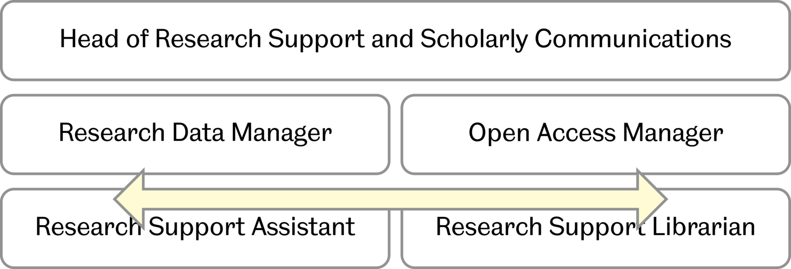

Lessons learnt
Jez Cope, Research Data Manager
University of Sheffield Library
We’re a Russell Group University with big ideas and great ambition
A leading UK University with a global reputation, ranked in the World Top 100 (QS World Rankings 2014)
We’re in the top 10% of UK universities for research excellence
More than 26,000 students from all over the world
18,000+ undergraduates
7,500 postgraduates
Over 4,000 students from China, with large numbers from Malaysia, Hong Kong, Nigeria and India
Our collaborative work with global partners has an international impact. These include cutting-edge businesses such as Siemens, Rolls-Royce and Boeing and partnerships with universities like Tokyo, Cape Town and Sydney
We are driven to make a difference through world-class research to solve big global issues
86% of our research submitted to the 2014 Research Excellence Framework was rigorously assessed as being world-leading or internationally excellent; we are in the top 10% of UK universities for research excellence
We are committed to investing in life-changing research, supporting and nurturing innovative projects through our 2022 Futures programme
Technology
Culture
Policies
funder — publisher — institution
Legal requirements
Impact
Raise profile/influence
Attract collaborations
Citations
Enable new types of research
Confidentiality
Getting scooped
Loss of funding

We needed a platform to:
Single sign-on
Flexible storage
Custom metadata
Curation workflow
Preconceptions about "Figshare" as a brand
How to establish it as a Sheffield thing
Authentication
Symplectic Elements
Engagement vs. Quality
Excellent communication from figshare
Open to feature requests and ideas
Library
IT Services (CICS)
Research Office (RIS)
Welcomed as timely
Plenty of creative ideas
Wider rollout
Further systems integration
E.g. Ex Libris Rosetta